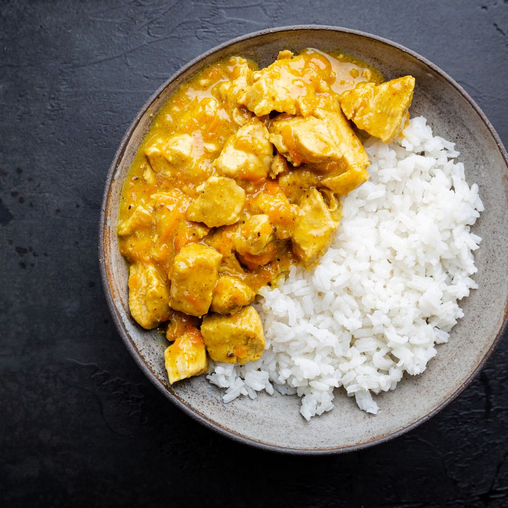

La Gastronomie en Guadeloupe !
Accueil
La guadeloupe est notre Grand Papillon, elle regorge de belles plages de restaurant ou l'on peut déguster de délicieux plats
traditionel tel que:
- -Le Riz harricot rouge
- -La Langouste
- -Le Colombo
- -Le Bébélé
- -Le Boudin Créole
- -Le court-bouillon de poisson
- -Le matété de crabe
- -Les casaves
- -Les dombrés ouassous
- -Les bokits et plein d'autres...
La cuisine créole prône à elle seule le métissage. Le mariage des saveurs africaines, des parfums de l’Inde et du savoir-faire hérité des grands-mères,
ajouté à celui de quelques parents ayant vécu en métropole, a donné une cuisine originale, et les produits locaux, poissons,langouste et légumes, bien travaillés.
On va appresant vous donner notre top 3 des plats guadeloupéens !
1)Le colombo
Le colombo est une autre préparation très répandue en Guadeloupe.
Pour faire simple, il s’agit d’une sauce mélangeant de nombreuses épices, et principalement du curry
Ses influences sont donc typiquement indiennes.
Traditionnellement, le Colombo antillais contient du curcuma, du poivre noir, des graines de moutarde, du thym, du piment de Jamaïque, du curry et de la coriandre...
Cette sauce sert ensuite de marinade à de nombreuses viandes ou poissons locaux, pour donner naissance à un plat riche en saveurs.
Par sa couleur jaune et par son goût, le colombo est très proche du curry.
Cependant, sa saveur est plus douce et moins épicée en général. Cette ressemblance n'est pas un hasard.

2)Dombrés ouassous
Une spécialité de la cuisine guadeloupéenne tété dwet (à se lécher les doigts), au sens figuré comme au sens propre.
Les dombrés sont des petites boules de farine que l’on fait mijoter dans une sauce à la tomate et aux ouassous, des grosses crevettes de rivière.
D‚Äôo√π la n√©cessit√© de s‚Äôy prendre avec les mains üòâ
A noter : les dombrés peuvent aussi être préparés avec des haricots rouges et des queues de cochon, ou encore avec des lentilles et du lard.
Une version à base de patate douce plutôt que de farine de blé est aussi possible pour les intolérants au gluten.
3)Les Cassaves
La cassave est consommée comme du pain pour tartiner ou pour éponger une sauce ou une soupe.
Dans les antilles, les cassaves se consomment fourrées à la chiquetaille de morue ou féroce d'avocat, ou encore sucrées à la confiture de coco
avec de la noix de coco rapée, de la pate de goyave, ou d'un autre fruit.
Les recherches archéologiques ont prouvé qu'il fut primitivement cultivé il y a 4000 ans au Pérou.
Cette culture, spécifique du continent américain, précéda le mais dans beaucoup de région. Mais l'alimentation précolombienne s'organisa rapidement
autour du maïs et du manioc.